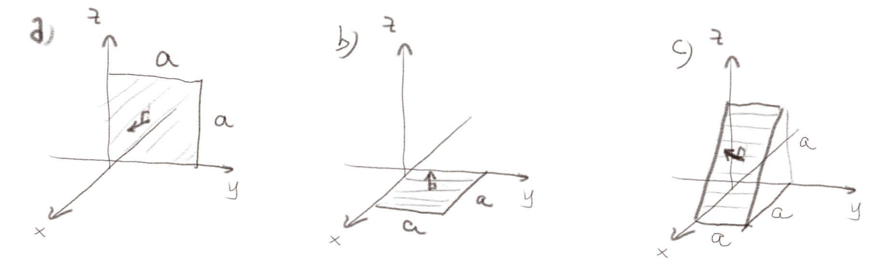
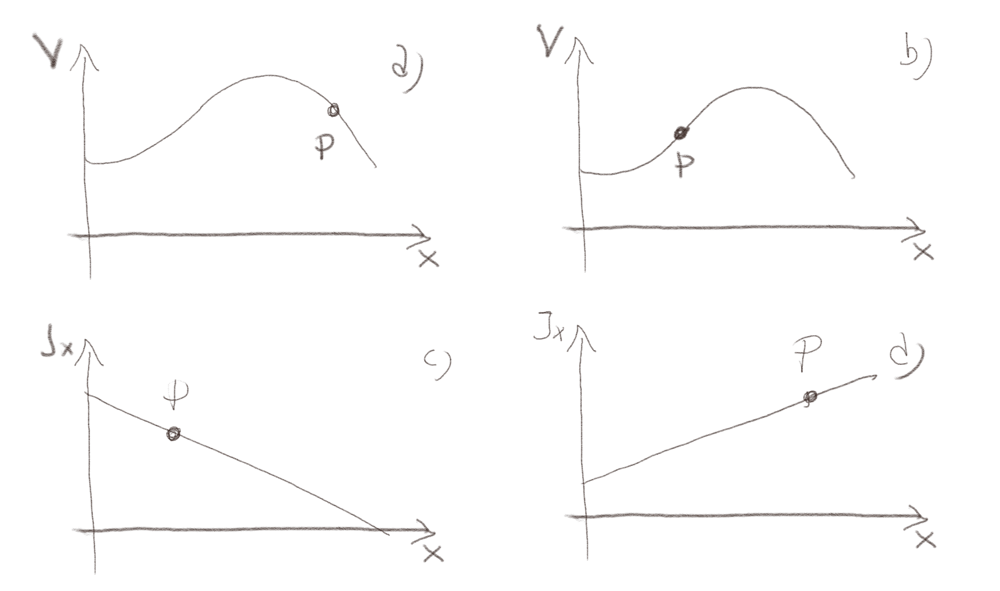
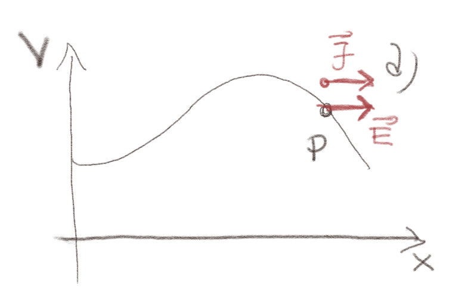
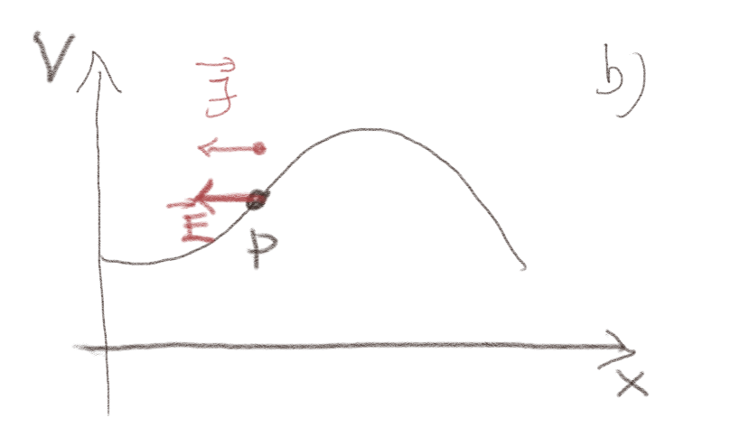
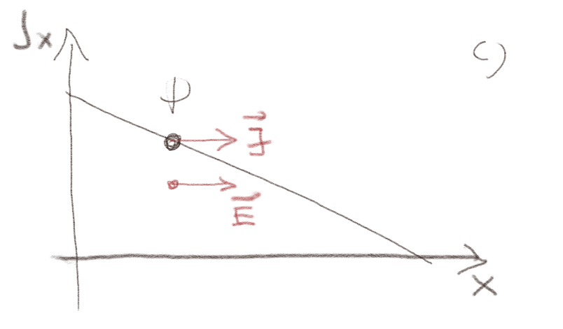
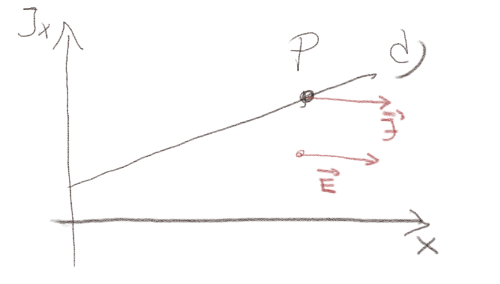
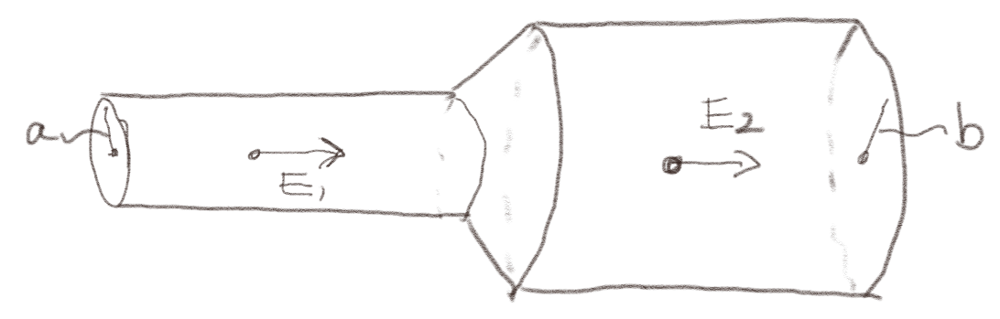
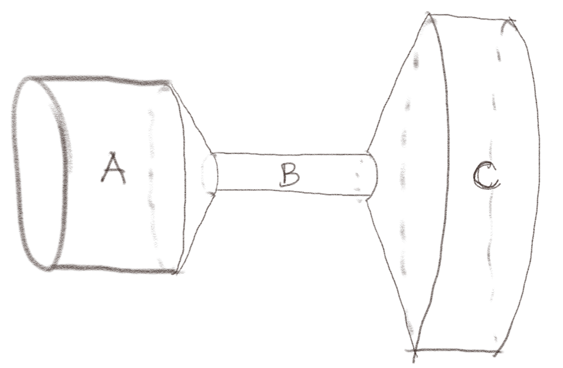
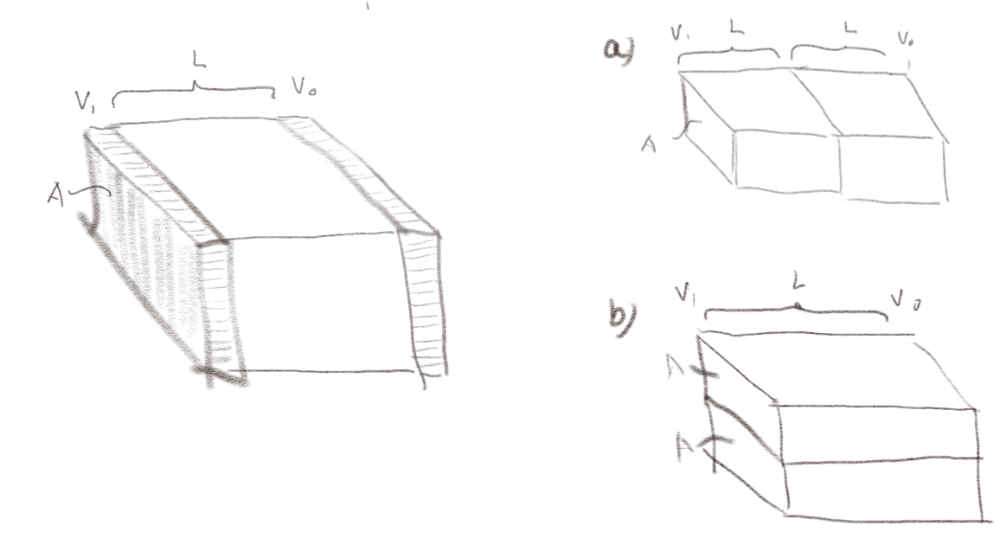

(Lærebok 8.1)
a) I en liten kanal gjennom en cellemembran strømmer det positive ioner ut gjennom membranen og negative ioner inn gjennom membranen. Ionene har like stor, men motsatt ladning, tetthetene av positive og negative ioner er de samme og de har samme hastighet. Er det en netto strøm gjennom membranen?
Ja, ut gjennom membranen
Strømmen gjennom membranen er gitt som ladning per tidsenhet som passerer gjennom membranen. Det er her to bidrag til strømmen: Fra de positive ladningene og fra de negative ladningene.
Når vi ser på strømmen må vi se på hvor mye ladning som beveger seg i en bestemt retning: Vi må ta hensyn til både fortegnet til ladningen og til retningen den beveger seg i. Merk da at en ladning \( \Delta q \) beveger seg ut av membranen gir samme bidrag til strømmen ut av membranen som en ladning \( - \Delta q \) som beveger seg inn gjennom membranen!
Da blir det lettere å forstå denne oppgaven. I løpet av en liten tid \( \Delta t \) går det \( N \Delta t \) positive ladninger ut av membranen. Det bidrar til en positiv strøm. Og det går \( N \Delta t \) negative ladninger inn gjennom membranen. Det bidrar også til en positiv strøm. Netto positiv ladning som passerer ut gjennom membranen er det \( \Delta q = q N \Delta t - (-q N \Delta t) = 2 q N \Delta t \) og strømmen blir \( I = \Delta q/\Delta t = 2 q N = I \).
a) En ladning \( Q \) som strømmer gjennom et sirkulært tverrsnitt med radius \( a \) i løpet av tiden \( t \) gir strømmen \( I_1 \). Hvis ladningen \( 2Q \) strømmer gjennom et sirkulært tverrsnitt med radius \( 2r \) i løpet av tiden \( t \), hva blir da strømmen \( I_2 \) relativt til \( I_1 \)?
\( I_2 = 2 I_1 \)
Merk at strømmen \( I \) er definert som hvor mye positiv ladning som strømmer gjennom et tverrsnitt per tidsenhet. Strømmen er ikke definert som ladning per tverrsnitt areal per tid, men som ladning per tid. Det betyr at størrelsen på areal ikke betyr noe her, kun netto ladning per tid. Vi ser derfor at \( I_1 = Q/t \) og \( I_2 = 2Q/t = 2I_1 \).
(Lærebok 8.1.1)
En strøm \( I \) strømmer gjennom en ledning med lengde \( L \). Ledningen har et kvadratisk tverrsnitt med side \( a \).
a) Hvis strømmen er uniformt fordelt på hele tverrsnittet, hva er størrelsen på strømtettheten \( \vec{J} \)?
\( J = I/a^2 \) Strømtettheten er gitt som strøm per flateenhet. Tverrsnittet har areal \( A = a^2 \), slik at $$ \begin{equation} J = \frac{I}{A} = \frac{I}{a^2} \tag{1} \end{equation} $$
b) Hvis strømmen er uniformt fordelt på overflaten av ledningen, hva er størrelsen på overflate-strømtettheten \( \vec{J}_S \)?
\( J_S = I/(4a) \) Strømtettheten er gitt som strøm per lengden som den er fordelt på. Tverrsnittet har lengde \( l = 4a \) slik at $$ \begin{equation} J_S = \frac{I}{l} = \frac{I}{4a} \; . \tag{2} \end{equation} $$
Figuren viser en uniform strømtetthet \( \vec{J} = J_0 \x \) og tre overflater med oppgitte overflatenormaler. Hva er strømmen gjennom overflatene a, b og c?

a) For en flate a som ligger i \( yz \)-platet.
\( I = J_0 a^2 \)
Strømmen er gitt som $$ \begin{equation} I = \int_S \vec{J} \cdot \d \vec{S} \tag{3} \end{equation} $$ hvor \( \vec{J} = J_0 \x \) og \( \d \vec{S} = \x \d S \). Overflatenormalen peker i samme retning som strømtettheten. Strømmen blir derfor kun \( J_0 \x \cdot a^2 \x = J_0 a^2 \)
b) For en flate b som ligger i \( xy \)-planet?
\( I = 0 \)
Vi ser at retningen på strømtettheten er i \( x \)-retningen, mens flatenormalen er i \( z \)-retningen. De er derfor normalt på hverandre og skalarproduktet er derfor null. Vi får derfor at $$ \begin{equation} I = \int_S \vec{J} \cdot \d \vec{S} = \int_S J_0 \x \cdot a^2\z \d S = 0 \; . \tag{4} \end{equation} $$
c) For en flate c som skissert i figuren?
\( I = J_0 a^2 \)
Det er flere måter å angripe denne oppgaven på. En måte er å innse at det kun er den dele av arealet som er normalt på strømtettheten som bidrar til strømmen. Størrelsen på den delen av arealet som er normalt på strømtettheten er projeksjonen av flaten inn på \( yz \)-planet. Størrelsen av denne flaten er \( a^2 \). Dermed er \( I = \vec{J} \cdot \vec{S} = J_0 a^2 \).
Alternativt kan man regne dette ut med vektor-algebra, men det krever litt regning. Vi finner \( \vec{S} = a \, \sqrt{2} a \nhat \), hvor \( \nhat = \frac{1}{\sqrt{2}}(1,0,1) \), slik at \( I = \vec{J} \cdot \vec{S} = J_0 \x \cdot (a^2\sqrt{2})/\sqrt{2}( \x + \z) = J_0 a^2 \).
(Lærebok 8.2)
Figuren viser det elektriske potensialet (a,b) og strømtettheten (c,d).

a) Skisser strømtettheten i punktet \( P \).
Strømtettheten peker samme retning som \( \vec{E} \):

b) Skisser strømtettheten i punktet \( P \).
Strømtettheten peker samme retning som \( \vec{E} \):

c) Skisser det elektriske feltet i punktet \( P \).
Det elektriske feltet peker sammen retning peker samme retning som \( \vec{J} \):

d) Skisser det elektriske feltet i punktet \( P \).
Det elektriske feltet peker sammen retning peker samme retning som \( \vec{J} \). Merk at figuren viser at \( J_x \) er positiv, slik at feltet peker i positiv \( x \)-retning.

Figuren viser to sylindriske ledere av det samme materialet som er koblet sammen som vist. Det går en stasjonær strøm \( I \) gjennom hele lederen. Du kan anta at strømtettheten er uniform gjennom et tverrsnitt gjennom lederen.

a) Hva er forholdet mellom de elektriske feltene \( E_1 \) og \( E_2 \). Du kan anta at strømtettheten er uniform i tverrsnittene ved \( E_1 \) og \( E_2 \).
\( E_1 > E_2 \)
Strømmen er den samme og strømmen er relatert til strømtettheten gjennom $$ \begin{equation} I = \int_S \vec{J} \cdot \d \vec{S} \; . \tag{5} \end{equation} $$ Fordi strømtettheten er uniform gjennom et tverrsnitt kan vi skrive \( \int_S \vec{J} \cdot \d \vec{S} = \vec{J} \cdot \vec{S} = J S \). Vi ser derfor at \( S_1 J_1 = I_1 \) og \( S_2 J_2 = I_2 \) og \( I_1 = I_2 = I \). Vi bruker så Ohms lov som gir oss at \( J_1 = \sigma E_1 \) og \( J_2 = \sigma E_2 \). Det gir oss at $$ \begin{equation} E_1 = \frac{I}{\sigma S_1} \quad , \quad E_2 = \frac{I}{\sigma S_2} \; . \tag{6} \end{equation} $$ Vi ser derfor at når \( S_1 < S_2 \) så blir \( E_1 > E_2 \)
b) Finn det elektriske feltet \( E_1 \) uttrykt ved \( I \) og \( a \) og \( E_2 \) uttrykt ved \( I \) og \( b \).
\( E_1 = I/(\sigma \pi a^2) \), \( E_2 = I/(\sigma \pi b^2) \).
Vi bruker resultater fra forrige oppgave og setter inn at \( S_1 = \pi a^2 \) aog \( S_2 = \pi b^2 \) slik at \( E_1 = I/(\sigma \pi a^2) \) og \( E_2 = I/(\sigma \pi b^2) \).
En kobbersylinder blir dreiet ned til å ha formen i figuren under. Vi kobler endene til et batteri slik at det går en strøm gjennom kobberet.

a) Ranger strømtettheten og det elektriske feltet i de tre delene fra høyest til lavest.
\( J_B > J_A > J_C \), \( E_B > E_A > E_C \)
Strømmen vil være den samme gjennom hvert tverrsnitt. Strømtettheten er derfor \( J_i = I/A_i \) slik at \( J_B > J_A > J_C \). Det elektriske feltet er \( E_i = J_i/\sigma \), hvor \( \sigma \) er den samme i alle delene. \( E \) er derfor proporsjonal med \( J \) og rangering av \( E_i \) blir som rangering av \( J_i \).
(Lærebok 8.3)
Figuren til venstre viser en motstand med lengde \( L \) og tverrsnittareal \( A \) mellom to ledere. Dette systemet har strømmen \( I \), strømtettheten \( J_1 \), feltet \( E_1 \), potensialet \( V_1 \) og motstanden \( R_1 \). Vi lager så et nytt system ved å sette sammen to slike motstander slik at (a) den nye motstanden er dobbelt så lang eller (b) den nye motstanden har dobbelt så stort tverrsnittareal. Anta at den samme strømmen \( I \) går gjennom systemet i alle tilfeller.

a) I figur (a), hvilke størrelse (\( J_2 \), \( E_2 \), \( V_2 \), \( R_2 \)) endres og hvilke forblir uendret sammenliknet med systemet \( 1 \) som består av en enkelt motstand \( R_1 \). Finn de nye størrelsene.
\( J_1 = J_2 \), \( E_1 = E_2 \), \( V_2 = 2 V_1 \), \( R_2 = 2 R_1 \).
Strømmen er den samme. Strømtetthetet blir derfor \( J_2 A_2 = I \), \( J_2 = I/A \) som forblir den samme fordi tverrsnittarealet er det samme, \( A_2 = A_1 \). Derfor er det elektriske feltet også det samme, \( E_2 = J_2/\sigma = J_1/\sigma = E_1 \). Potensialet er gitt som \( V_2 = \int_1^0 E_2 \d l = E_2 L_2 = E_2 2 L_1 \) slik at \( V_2 \) blir dobbelt så stor som \( V_1 \). Det betyr at \( R_2 = V_2/I_2 = 2 V_1/I = R_1 \) også blir dobbelt så stor.
b) I figur (b), hvilke størrelser (\( J \), \( E \), \( V \), \( R \)) endres og hvilke forblir uendret sammenliknet med systemet som består av en enkelt motstand. Finn de nye størrelsene.
\( J_2 = J_1/2 \), \( E_2 = E_1/2 \), \( V_2 = V_1/2 \), \( R_2 = R_1/2 \).
Strømmen er den samme. Strømtettheten bilr derfor \( J_2 A_2 = I \), \( J_2 = I/A_2 = I/(2 A_1) = (I/A_1)(1/2) = J_1/2 \). Det elektriske feltet blir derfor \( E_2 = J_2/\sigma = (1/2) I/(\sigma A_1) = J_1/(2 \sigma) = E_1/2 \). Det elektriske potensialet blir \( V_2 = \int_1^0 E_2 \d l = E_2 L_2 = E_2 L_1 = E_1 L_1 /2 = V_1/2 \). Det betyr at \( R_2 = V_2/I_2 = V_1/I (1/2) = R_1/2 \).
(Lærebok 8.4)